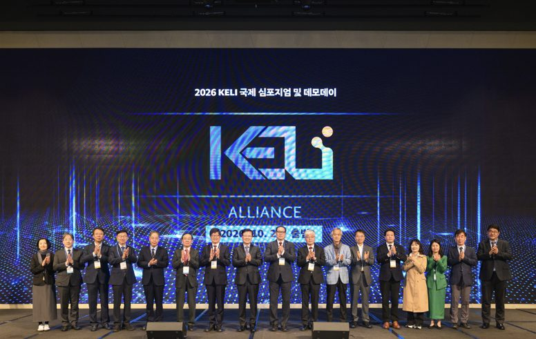
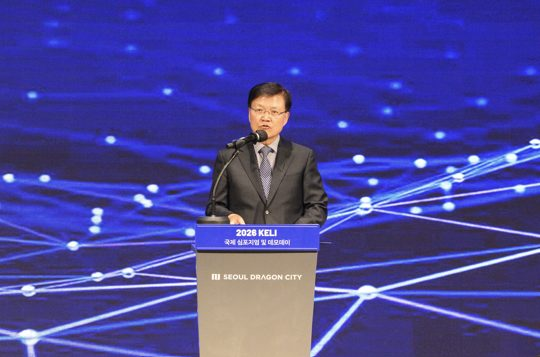

한림대학교, ‘켈리 얼라이언스(KELI Alliance)’ 공식 출범…AI 교육 공동 활용 본격화
2026.10.20 · 한림대학교 커뮤니케이션팀 · 원문 보기
- 20일(화) 서울드래곤시티에서 ‘2026 KELI 국제 심포지엄 및 데모데이’ 성황리 개최
- 대학, 기업, 연구기관 협력체 출범…AI 교육 서비스 공동 개발 및 검증, 확산 추진
- 국내외 AI 교육혁신 사례 공유·한림대 개발 AI 교육 서비스 19종 현장 시연

한림대학교(총장 최양희)가 20일(화) 서울 용산 서울드래곤시티 그랜드볼룸에서 ‘2026 KELI 국제 심포지엄 및 데모데이’를 성황리에 개최하고 ‘켈리 얼라이언스(KELI Alliance)’를 공식 출범했다.
*KELI: K-University AI EduTech and Learning Initiative
‘켈리 얼라이언스(KELI Alliance)’는 대학, 기업, 연구기관이 AI 교육 서비스를 공동으로 개발하고 검증해 활용하기 위한 협력체다.
이날 행사는 ‘AI로 연결하는 고등교육 혁신 생태계’를 주제로 국내외 대학, 에듀테크 기업, 공공 및 연구기관 관계자 등 전국 129개 기관, 총 317여 명이 참석했다.

먼저 개회사, 최양희 총장의 환영사, 윤희성 학교법인일송학원 이사장의 축사로 시작됐으며, 이어 고영웅 AI교육혁신원장이 KELI의 비전과 협의체 운영 방향을 발표하고 ‘KELI Alliance’의 공식 출범을 선포했다.
이를 통해 대학과 기업이 함께 AI 교육혁신 성과를 공유하고 확산하는 개방형 고등교육 생태계 구축의 방향을 제시했으며, 또한 이날 참석자들은 AI 기반 고등교육의 변화 방향과 국내외 수업 혁신 사례를 공유하고 한림대가 개발하고 실증한 AI 교육 서비스 19종을 직접 체험했다.
대학·기업·연구기관 손잡고 AI 교육 협력 기반 마련
이어 KELI의 비전과 협의체 운영 방향을 발표하고 KELI Alliance의 공식 출범을 선언했다.
참여 기관들은 AI 교육 서비스의 공동 개발 및 실증과 교육 효과 검증, 활용 경험 공유를 위한 협력 기반을 마련했다.
KELI(K-University AI EduTech and Learning Initiative)는 대학과 에듀테크 기업 등이 AI 교육 서비스와 코스웨어를 공동으로 개발, 실증, 확산하는 고등교육 AI 공유 플랫폼이다.
한림대는 2025년 KELI의 출범에 이어, 이번 KELI Alliance의 발대식을 통해 참여 기관 간의 협력 구조를 구체화했다.
이 플랫폼은 서비스 공유와 협의체를 통한 공동 실증을 연결한다는 점에서 의미가 크다.
한림대학교는 얼라이언스를 기반으로 대학별 AI 서비스 중복 개발의 부담을 줄이고, 교육 현장에서 검증된 서비스와 운영 경험을 여러 대학에서 활용할 수 있도록 협력을 확대한다.
특히, 개발 여건이 다른 대학들이 공동 실증에 참여할 수 있도록 함으로써 대학 간 AI 교육 활용 격차를 줄이는 데 힘쓰고 있다.
국내외 대학 AI 수업 혁신 사례 공유…서울대 오세정 前 총장 기조연설
기조연설에 나선 오세정 전 서울대학교 총장은 ‘The Future of the University(대학의 미래)’를 주제로 AI 시대 대학의 변화 방향을 제시했다.
이어진 세션에서는 교수학습과 학생 지원, 전문교육에 AI를 적용한 국내외 대학의 사례가 공유됐다.
박현제 한림대 AI에듀테크센터장은 한림대학교 주도로 개발된 AI 교육 공유 서비스 체계인 ‘HAI Ecosystems’를 소개했고, 고영웅 AI교육혁신원장은 AI 교수 서비스 ‘HAI-AI Prof’를 활용한 교육혁신 사례를, 홍수현 융합교육지원센터장은 ‘HAI-CLR’을 통한 학생 성장 통합 관리 사례를 발표했다.
이어 유경호 한림대 의과대학장은 AI 의학교육 코스웨어 ‘MedLearn-X’의 활용 사례를 발표하고, 인도네시아 대학의 AI 수학 튜터 ‘HAI-MathTutor’ 적용 사례와 유혁 고려대 교수의 AI 기반 교육혁신 사례도 소개되면서 AI 교육 서비스의 실제 대학 수업 활용 경험을 나눴다.
또한 글로벌 에듀테크 세션에서는 조용상 1EdTech Korea 초대 의장이 국제 교육 기술 표준과 서비스 간의 상호 운용성을, 네덜란드 헤이그 응용 과학 대학교의 클라우디아 디어스-린케(Claudia Diers-Lienke) 연구원이 책임감 있는 AI 리터러시에 대해 다뤘다.
덴마크 챗튜터(ChatTutor)의 마리우스 코르트센(Marius Cortsen) 대표와 튜 헤를라우(Tue Herlau) 최고 기술 책임자(CTO)는 대학 수업에서 AI 에이전트를 활용하는 사례를 소개했다.
AI 교육 서비스 19종 현장 시연으로 공동 실증 성과 확산
행사장에 마련된 ‘KELI 마켓플레이스’에서는 한림대가 개발하고 실증한 ‘HAI Ecosystems’의 AI 교육 서비스 19종을 소개했다.
참가자들은 연구자 매칭 서비스인 ‘HAI-Research’, AI 수학 튜터인 ‘HAI-MathTutor’, AI 교수인 ‘HAI-AI Prof’, 강의 분석 서비스인 ‘HAI-LENS’, 그리고 적응형 평가 서비스인 ‘HAI-Check’ 등 교수 학습과 연구, 평가 분야의 다양한 서비스를 직접 체험했다.
한림대는 AI 교육 서비스의 개발에 그치지 않고 대학 수업 현장에서 실증 성과를 축적해 왔다.
교육부·한국교육학술정보원(KERIS)이 추진하는 고등교육 에듀테크 소프트랩 사업의 국내 유일 운영기관으로 2024년부터 3년째 활동하고 있으며, 전국 6개 권역 46개 대학이 참여하는 컨소시엄을 구축해 3개년 누적 120개 강좌에서 교원 119명과 학생 4,739명(2026년 예상 수강인원 2,454명 포함)이 AI 코스웨어 실증에 참여했다.
이러한 현장 실증 경험은 AI 교육 서비스를 수업에 적용하고 개선하는 기반이 됐다.
특히 이번 켈리 얼라이언스의 출범을 계기로 대학, 기업, 연구기관이 함께 교육 서비스를 개선하고 그 실증 결과를 공유하는 협력을 확대할 예정이다.
또한, 국내 대학에서 축적된 AI 교육 운영 경험을 해외 대학 및 기업과 공유해 고등교육 AI 혁신 모델의 확산을 추진할 계획이다.
최양희 한림대 총장은 “실제 수업에서 검증된 AI 교육 서비스가 더 많은 대학에서 활용되도록 하는 것이 중요하다”며 “KELI Alliance를 통해 대학과 기업, 연구기관이 함께 검증하고 개선하는 고등교육 AI 협력 생태계를 만들어 가겠다”고 말했다.
한편, 이번 행사는 한림대학교가 주최하고 한림대학교 AI교육혁신원이 주관했으며 글로컬대학30 사업의 일환으로 진행됐다.
KELI와 AI 교육 서비스에 관한 자세한 내용은 공식 홈페이지(https://keliedu.org/keli)에서 확인할 수 있다.
출처: 한림대학교 홍보 보도자료.
본문과 사진의 저작권은 한림대학교에 있습니다.